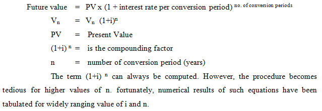
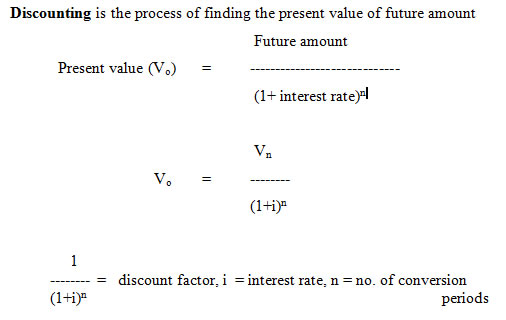
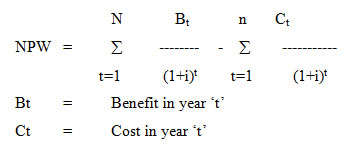
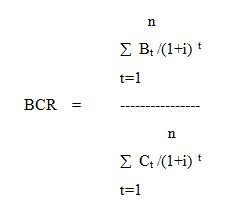
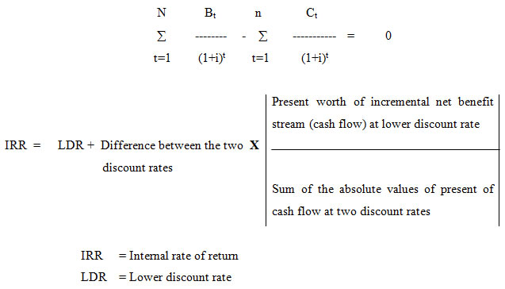

ARM402 :: Lecture 13 :: VENTURE FEASIBILITY

Financial feasibility
A food processing firm would like to expand the existing business or modernize the same or establish new business. Such ventures necessitate the firm to commit large amount of funds in creation of fixed assets in the current year or within few years, which will generate cash flows during many future periods. Investment decisions pertaining to creation of additional fixed assets or modernizing the old areas are generally known as Capital Budgeting or Capital Expenditure decisions.
Capital budgeting decisions may be defined as the firm’s decision to invest its current funds most efficiently on long-term assets in anticipation of an expected flow of benefits over a period of time. Investment in the long term assets invariably required funds to be tied up in the current assets such as inventories. The investment decisions require special attention because i) they influence the growth in the long run, ii) it may reduce or increase risk in business, iii) it is necessary to arrange huge funds internally or externally, iv) most investment decisions are irreversible or the firm will incur heavy losses if decisions are reversed, and v) the investments decisions are made based on the assumptions about cash flow in future.
The capital budgeting techniques may be grouped in to following categories;
i) Discounted techniques
ii) Undiscounted techniques
The major difference between these two measures is based on consideration of time value of money. Investment decisions involving expansion
or modernization of existing business or venturing into new business involves utilization of funds for creation of assets in a year or few years, which will generate cash flows during many future periods.
Time Value of Money
Interest rate serves as the pricing mechanism for the time value of money. The rate of interest is considered as an exchange price between the present and future rupees. Thus one rupee today exchanges for (1+ i) rupees at the end of period one in future. Or alternatively a one rupee payment made at a period in the future exchanges for 1/1 +i rupees now.
Compounding is the process of finding future value of present amount


The effects of time and interest on present and future values:
The important variables determining present and future values of payment are:
- The number of conversion periods and
- The size of interest rate per compounding period
Discounted Measures
In discounted measures of investment analysis the time value of money is taken into consideration. Following are the discounted measure of investment analysis.
i) Net present worth or value (NPV or NPW)
- Benefit cost ratio (BCR)
- Internal rate of return (IRR)
Discounting factor
In calculation of net present worth or benefit cost ratio, discounting factor must be chosen prior to investment analysis. Usually the discounting factor used is the opportunity cost of capital. The bank rate given on long term deposit (12%) is chosen as the discount factor,(alternatively, the entrepreneurs instead of investing in the proposed investment can deposit in a bank and earn 12% of interest).
i) Net present worth
This is the present worth of incremental net benefit or incremental cash flow stream. It is interpreted as the present worth of the income stream generated by an investment.

Selection criterion
Accept all independent projects with a zero or greater net present worth when discounted at opportunity cost of capital. Ranking of acceptable alternative independent project is not possible with net present worth criterion because it is an absolute and not a relative measure. It is also the preferred selection criterion to choose among mutually exclusive project.
ii) Benefit Cost Ratio
This is the ratio of present worth of benefit stream to present worth of cost stream.

Selection criterion
Accept all independent projects with a benefit cost ratio of 1 or greater when the cost and benefit streams are discounted at opportunity cost of capital.
iii) Internal Rate of Return (IRR)
In NPW and BC ratio, market rate of interest is chosen and the project is assessed whether it is rewarding at this standard (interest). The IRR is a method to assess the maximum interest that the investment could generate for the resources used.
Internal rate of return is that discount rate which makes the net present worth of incremental net benefit equal to zero.

| Download this lecture as PDF here |